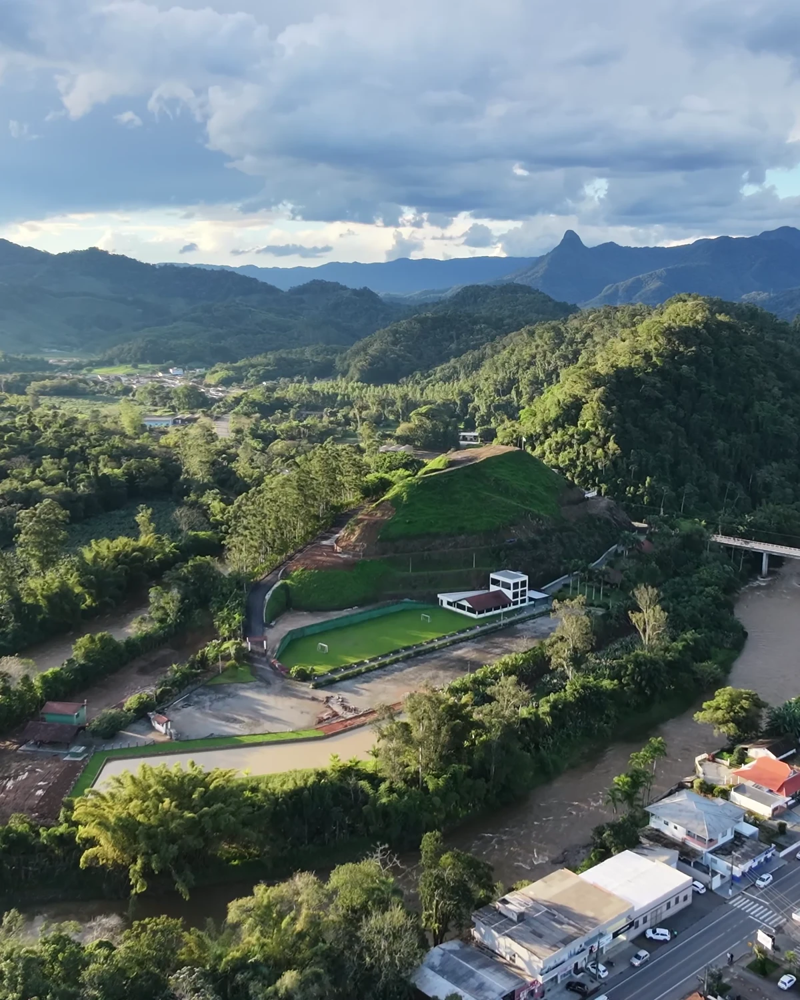

HISTÓRIAS VISTAS DO ALTO
KJE VISUALS — FILMES AÉREOS
Um novo
ponto de vista.
Paisagens, encontros e histórias.
Vistos de onde poucos olham.
01 / PORTFÓLIOUM RECORTE DE CADA VOO
Cada voo,
uma nova história.
Um instante muda quando a gente
muda a forma de olhar.

UM OUTRO ÂNGULO. A MESMA ESSÊNCIA.02 / POR TRÁS DO OLHARA perspectiva
A perspectiva
muda.
A história fica.
Sou Kléber Erbes, o olhar por trás da KJE VISUALS. Uso o drone para registrar paisagens, viagens e a energia dos encontros.
Meu portfólio reúne esses instantes: a cidade que se revela do alto, a natureza em movimento e os detalhes de cada evento.
Acompanhe meu olhar03 / CONTINUE ACOMPANHANDONOVOS ÂNGULOS, A CADA VOO.
O próximo voo
começa por lá.
Novos filmes, bastidores e um pouco do que vejo do alto.